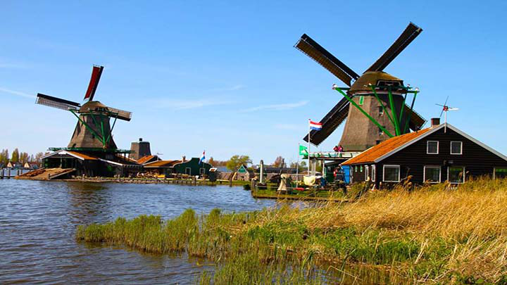
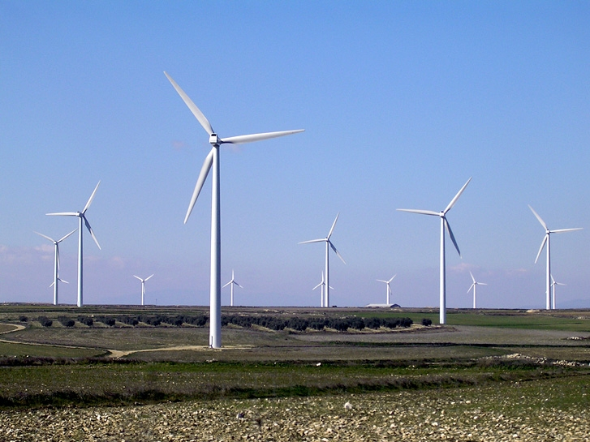
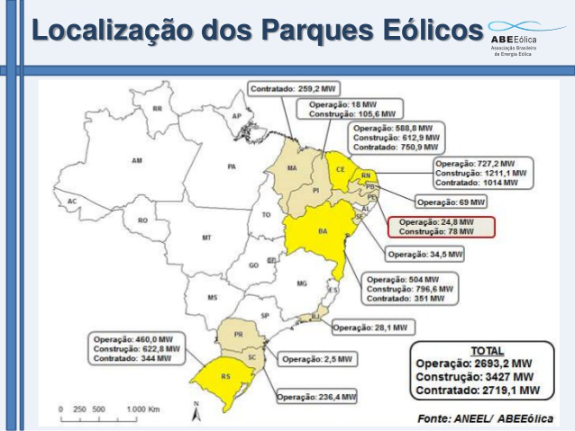

Esse blog mostra os principais tipos de energia.
Também conhecida como energia maremotriz, a energia das marés é aquela gerada a partir do potencial energético contido no fluxo das marés. É uma fonte de energia renovável, limpa e alternativa. Como é gerada
Nos oceanos existem desníveis no solo abaixo da água. Instalando barragens e um sistema de geradores é possível gerar energia elétrica. A água é represada durante o período de maré alta num reservatório instalado no oceano (geralmente próximo ao litoral). No período de maré baixa a água sai e movimenta as turbinas. Um sistema de conversão possibilita a geração de eletricidade. Vantagens
- É uma fonte de energia limpa e renovável.
- É uma alternativa para países que por diversos motivos não podem gerar energia elétrica através de outras formas.
Desvantagens
- Necessidade de ter uma situação geográfica favorável, ou seja, presença de marés no litoral e desnível no solo do oceano.
- A implementação do sistema de uma usina maremotriz ainda é caro em relação ao sistema de hidrelétrica. Assim, a relação custo/benefício ainda não é vantajosa para muitos países.
- Pode ocorrer impacto ambiental na implantação do sistema, principalmente com relação ao ecossistema marinho.
- Baixo aproveitamento energético.
Curiosidades
Quando afuniladas em baías, as marés podem atingir até 15 metros de desnível. Dessa forma, seu aproveitamento energético requer a construção de barragens e instalações geradoras de eletricidade.
Uma usina de aproveitamento da energia das marés requer três elementos básicos: casa de força ou unidades geradoras de energia, eclusas, para permitir a entrada e saída de água da bacia, e barragem.
Em 1967, o primeiro grande projeto de aproveitamento das marés foi construído no rio Rance, na França, onde a média anual das marés é de 8,4 metros de desnível. Esse projeto consistiu na construção de uma barragem de 710 metros de comprimento.
No entanto, a captação desse tipo de energia é restrita a poucas localidades, pois o desnível das marés deve ser superior a 7 metros. Os locais mais propícios para a instalação de estações de energia das marés são: baía de Fundy (Canadá) e baía Mont-Saint-Michel (França), ambas com mais de 15 metros de desnível. No Brasil, os locais favoráveis à construção de estações para o aproveitamento dessa forma de energia são o estuário do rio Bacanga, em São Luís (MA), com marés de até 7 metros, e, principalmente, a ilha de Macapá (AP), com marés de 11 metros.
Um pouco de história:
A energia eólica é conhecida pelo homem há mais de 3.000 anos.
Em muitas civilizações os cata-ventos eram utilizados para moer grãos, bombear água e transportar mercadorias em barcos a vela.
Definição de Energia Eólica:
A energia eólica diz respeito à transformação da energia do vento em energia útil, é uma forma de obter energia de forma renovável e limpa, uma vez que, não produz poluentes
A energia eólica é uma fonte de energia que está permanentemente ao dispor do Homem
Parque Eolico:
Um parque eólico ou usina eólica é um espaço (terrestre ou marítimo), onde estão concentrados vários aero geradores (a partir de 5) destinados a transformar energia eólica em energia elétrica.
Para a construção desses parques é necessário a realização do EIA/RIMA (Estudo e Relatório de Impacto Ambiental) pois a sua má localização pode causar impactos negativos como a morte de aves e a poluição sonora.
Parque eólicos brasileiros:
Vantagens da energia eolica
Entre suas principais vantagens podemos mencionar que:
É uma tecnologia inesgotável;
Não emite gases poluentes e não gera resíduos;
Os parques eólicos podem ser utilizados também para outros meios, como a agricultura e a criação de gado;
É uma das fontes mais baratas de energia, podendo competir em termos de rentabilidade com as fontes de energia tradicionais;
Não requer uma manutenção frequente, uma vez que sua revisão é semestral;
Em menos de seis meses o aerogerador recupera a energia que foi gasta para ser fabricado.
A energia nuclear é obtida a partir da fissão do núcleo do átomo de urânio enriquecido
A energia nuclear, também chamada atômica, é obtida a partir da fissão do núcleo do átomo de urânio enriquecido, liberando uma grande quantidade de energia. A energia nuclear mantém unidas as partículas do núcleo de um átomo. A divisão desse núcleo em duas partes provoca a liberação de grande quantidade de energia.
Os primeiros resultados da divisão do átomo de metais pesados, como o urânio e o plutônio, foram obtidos em 1938. A princípio, a energia liberada pela fissão nuclear foi utilizada para objetivos militares. Posteriormente, as pesquisas avançaram e foram desenvolvidas com o intuito de produzir energia elétrica. No entanto, armas nucleares continuam sendo produzidas através do enriquecimento de urânio.
Atualmente os Estados Unidos lideram a produção de energia nuclear, porém os países mais dependentes da energia nuclear são França, Suécia, Finlândia e Bélgica. Na França, cerca de 80% de sua eletricidade é oriunda de centrais atômicas.
No fim da década de 1960, o governo brasileiro começou a desenvolver o Programa Nuclear Brasileiro, destinado a implantar no país a produção de energia atômica. O país possui a central nuclear Almirante Álvaro Alberto, constituída por três unidades (Angra 1, Angra 2, e Angra 3). Está instalada no município de Angra dos Reis, no estado do Rio de Janeiro. Atualmente, apenas Angra 2 está em funcionamento.
Essa fonte energética é responsável por muita polêmica e desconfiança: a falta de segurança, a destinação do lixo atômico, além da possibilidade de acontecerem acidentes nas usinas, geram a reprovação da utilização da energia nuclear por grande parte da população. Alguns acidentes em usinas nucleares já aconteceram, entre eles estão:
Three Miles Island – em 1979, na usina localizada na Pensilvânia (EUA), ocorreu a fusão do núcleo do reator e a liberação de elevados índices de radioatividade que atingiram regiões vizinhas.
Chernobyl – em 1986 ocorreram o incêndio e o vazamento de radiação na usina ucraniana, na extinta União Soviética, com milhares de feridos e mortos, podendo a contaminação radioativa ter causado 1 milhão de casos de câncer nos 20 anos seguintes.
A energia nuclear apresenta vários aspectos positivos, sendo de fundamental importância em países que não possuem recursos naturais para a obtenção de energia. Estudos mais aprofundados devem ser realizados sobre essa fonte energética, ainda existem vários pontos a serem aperfeiçoados, de forma que possam garantir segurança para a população.
Aspectos positivos da energia nuclear:
Aspectos negativos:
Fonte: http://brasilescola.uol.com.br/geografia/energia-nuclear.htm
A energia solar é proveniente da iluminação e calor do Sol, ela é captada através de painéis solares que a utilizam de variadas formas, principalmente com o aquecimento solar, energia solar fotovoltaica e energia heliotérmica. Aqui apresentamos algumas vantagens e desvantagens na sua utilização:
Vantagens
Desvantagens
Principais tecnologias de Energia Solar
1 - Energia Solar Térmica
Forma de aproveitamento da energia solar para gerar energia térmica ou energia elétrica para uso na indústria e ou residências.
2 - Aquecedor de Água Solar
É a forma de aproveitamento da energia solar térmica e é utilizado para aquecer água (conhecidos como aquecedores solares) tanto na residência quanto na indústria.
3 - Energia Solar Heliotérmica
Utiliza-se do calor dos raios para concentrar, usando espelhos, para focar a energia em um ponto específico, seja no topo de uma torre ou em um tubo a vácuo, para aquecer o líquido que há dentro transformando-o em vapor, assim alimentando uma turbina elétrica a vapor.
4 - Energia Solar Fotovoltaica (Conversão Direta da Radiação Solar em Energia Elétrica)
A energia fotovoltaica é hoje a fonte de energia limpa que mais cresce no mundo. Ela usa materiais semicondutores como o silício cristalino para converter a luz solar em energia fotovoltaica (Energia solar elétrica). Para ela ser aproveitada para gerar energia elétrica para casas e empresas as células fotovoltaicas precisam ser montadas dentro de um painel solar visando proteção e durabilidade e por sua vez, este painel solar, será conectado em outros painéis em um sistema solar fotovoltaico. O sistema solar fotovoltaico é composto por: Painéis solares, inversor solar, sistema de fixação das placas solares, cabeamentos, conectores e outros materiais elétricos padrões.
No ano de 2014, a biomassa teve uma participação significativa na matriz energética. Cerca de 7,4% da energia elétrica gerada no Brasil tem como fonte a biomassa (principalmente bagaço de cana e lenha).
Do ponto de vista ecológico, a biomassa é a quantia total de matéria viva presente num ecossistema ou numa população animal ou vegetal. No ponto vista energético, a biomassa envolve os materiais orgânicos empregados como combustíveis ou para produção.
A energia é gerada através da decomposição de materiais orgânicos (esterco, restos de alimentos, resíduos agrícolas que produzem CH4), numa usina de álcool, por exemplo, o resto da cana-de-açúcar pode ser utilizado para a produção de biomassa e energia. A biomassa é renovável, propicia o fornecimento de energia e auxilia na diminuição do CO2 na atmosfera.
Neste tipo de energia pode ser convertida em três produtos: calor, eletricidade e combustíveis fósseis. As técnicas utilizadas são:
1.Combustão: libera o calor para a produção de eletricidade por meio da biomassa, que pode ser utilizada nas usinas de carvão.
2.Gaseificação: Converte biomassa em combustível na forma gasosa tendo como principais produtos o hidrogênio e o monóxido de carbono, utilizados na geração de energia e indústria química.
3.Fermentação: Desintegra a biomassa com uma bactéria anaeróbica para que se forme uma mistura contendo metano e dióxido de carbono. É utilizado para a formação de eletricidade e nas indústrias para purificação de lixo e esgoto.
As vantagens da biomassa são o baixo custo de adquirição, não emite dióxido de enxofre, as cinzas originadas do processo são menos prejudiciais do que as de combustíveis fósseis, menor corrosão de equipamentos, menor risco ambiental, recurso renovável e seus gases não contribuem efeito estufa.
As desvantagens são menor poder calorífico, dificuldades no estoque e no armazenamento.